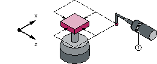
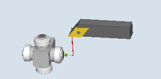
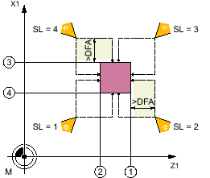
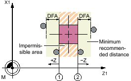

This measuring version can be used to calibrate a tool probe. Using the calibration tool, the actual distances between machine or workpiece zero and the probe trigger points are determined.
Values are corrected without empirical and mean values.
| Note |
|
If a special calibration tool is not available, a turning tool can be used instead with cutting edge positions 1 to 4 for the calibration of two sides of the probe. |
The calibration tool is shaped (angled) in such a way that the probe can be calibrated on all four sides with it.
When a turning tool or a calibration tool, type 725, is used, the probe can only be calibrated from 2 sides.
|  |  |
Calibrating the tool probe with a calibration tool | Calibrating a tool probe with a turning tool |
The cycle positions the calibration or turning tool to the probe. With a cycle call, the switching position in the specified measuring axis and measuring direction is calibrated.
Lengths 1 and 2 and the radius of the calibration or turning tool must be known exactly and stored in a tool offset data record.
This tool offset must be active when the measuring cycle is called.
For calibration, a reference turning tool, type 5xy, with precisely known geometry or a type 585 or type 725 calibration tool can be used (type 580 3D probe turning cannot be used)
Calibration with a calibration or turning tool with cutting edge positions 1 to 4 is possible.
The lateral surfaces of the probe cube must be aligned parallel to the machine axes Z1, X1 (axes of the plane).
The approximate positions of the switching surface of the probe regarding the machine or workpiece zero must be entered into the general setting data before calibration starts.
Additional information: SINUMERIK Operate Commissioning Manual
These values are used for automatic approach to the probe with the calibration tool and their absolute value must not deviate from the actual value by more than the value in parameter TSA.
The probe must be reached within the total path 2 · DFA.
Cutting edge positions 1 to 4 and suitable approach positions for both axes (machine-related) | |
① | Trigger point of the 1st measuring axis in the negative direction (general SD54625 $SNS_MEA_TP_TRIG_MINUS_DIR_AX1) |
② | Trigger point of the 1st measuring axis in the positive direction (general SD54626 $SNS_MEA_TP_TRIG_PLUS_DIR_AX1) |
③ | Trigger point of the 2nd measuring axis in the negative direction (general SD54627 $SNS_MEA_TP_TRIG_MINUS_DIR_AX2) |
④ | Trigger point of the 2nd measuring axis in the positive direction (general SD54628 $SNS_MEA_TP_TRIG_PLUS_DIR_AX2) |
Calibrating the tool probe with a calibration tool
Cutting edge positions 1 to 4 and suitable approach positions for both axes (machine-related) | |
① | Trigger point of the 1st measuring axis in the negative direction (general SD54625 $SNS_MEA_TP_TRIG_MINUS_DIR_AX1) |
② | Trigger point of the 1st measuring axis in the positive direction (general SD54626 $SNS_MEA_TP_TRIG_PLUS_DIR_AX1) |
③ | Trigger point of the 2nd measuring axis in the negative direction (general SD54627 $SNS_MEA_TP_TRIG_MINUS_DIR_AX2) |
④ | Trigger point of the 2nd measuring axis in the positive direction (general SD54628 $SNS_MEA_TP_TRIG_PLUS_DIR_AX2) |
Calibrating a tool probe with a turning tool
The cycle handles the approach to the probe.
The calibration or turning tool is located by the measurement path away from the measuring surface.
① | Trigger point of the 1st measuring axis in the positive direction (general SD54626 $SNS_MEA_TP_TRIG_PLUS_DIR_AX1) |
② | Trigger point of the 1st measuring axis in the negative direction (general SD54625 $SNS_MEA_TP_TRIG_MINUS_DIR_AX1) |
Position after the end of the measuring cycle, example 1st axis of the plane (for G18: Z)